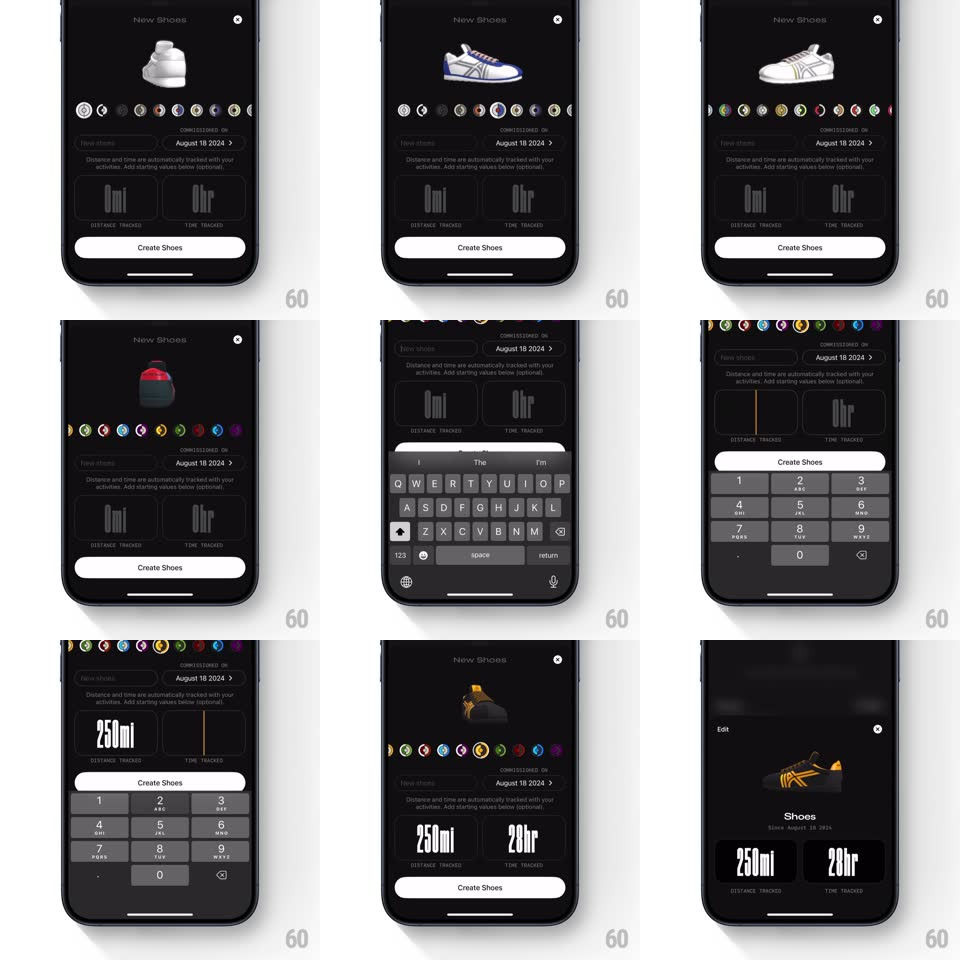

Media
Frame-by-frame

Rebuild this interaction 1:1: Any Distance's New Shoes sheet - a spinning 3D shoe over a circular brand picker, with a calendar popover and a stylized numeric pad for distance goals.

Rebuild this interaction 1:1: Any Distance's New Shoes sheet - a spinning 3D shoe over a circular brand picker, with a calendar popover and a stylized numeric pad for distance goals.
## Integration
Integration: stack-agnostic spec - springs given as stiffness/damping, timed motions as duration + curve; map every value to your framework and animation library of choice.
## Scene
Dark "New Shoes" sheet: a 3D shoe model rotating slowly at top, a horizontal row of circular brand icons, a nickname field, a "Commissioned on" date row, Distance/Time tracked cards ("0mi" / "0hr" in tall condensed type), and a white "Create Shoes" button.
## Motion spec
Pattern: staged form with live 3D preview.
- The shoe turntable-rotates continuously (one revolution per 6s, linear) and tilts a few degrees toward the side being edited.
- Brand picker: the row scrolls horizontally with momentum; the centered icon grows a colored ring (scale 1.15, ring draw 200ms) while others stay flat; on selection the shoe's colorway crossfades to that brand's model (300ms).
- Tap the date row: a month-grid calendar pops over the sheet (scale 0.9 to 1 + fade from the row's position, spring ~400/26); picking a day highlights it orange (fill 150ms) and the popover collapses back into the updated row.
- Tap Distance or Time: a numeric keypad slides up over the button area (spring ~340/26); entered digits set in tall condensed type inside the card, rolling vertically per digit (120ms); the unit suffix (mi/hr) stays pinned.
- Create Shoes lifts the sheet: the shoe card settles into the Shoes list behind (crossfade + slide down 300ms), showing the final "250mi / 20hr" stats.
## Calibration
- The 3D shoe never stops rotating - even under popovers it keeps turning behind the dim.
- Numeric input is direct manipulation on the card, not a separate field.
## Reduced motion
Shoe static; popovers fade.
## Don't miss
- Brand icons are real circular logos with the active one ringed - not a text list.
- Condensed display type is the app's signature; system rounded numerals break it.